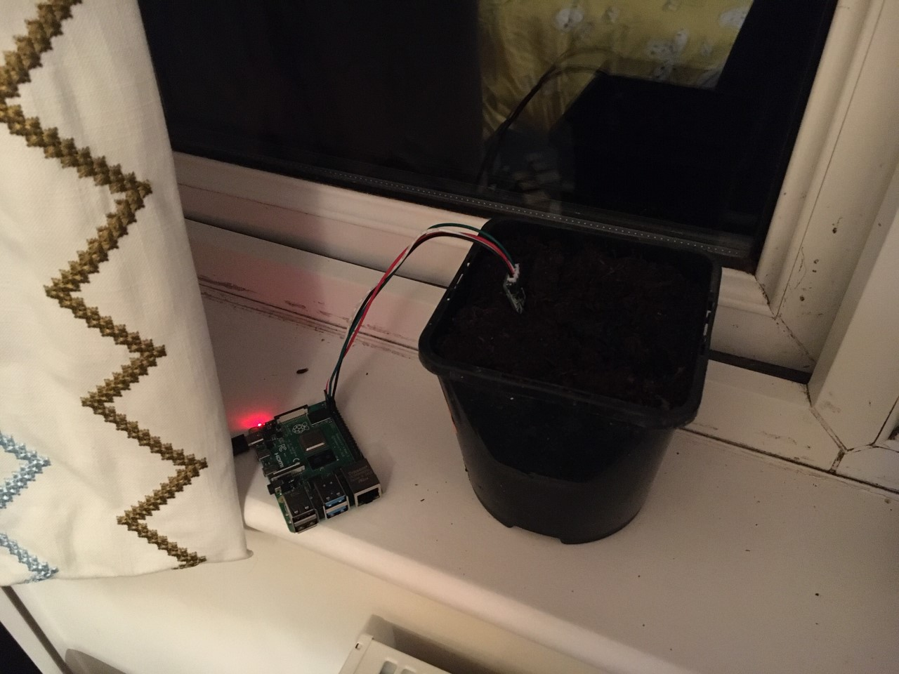

{% extends 'layout.html' %}

{% block title %}

  Garden Home
  
{% endblock %}

{% block content %}

<div class="container">
    <div class="row" id="header-bar">
            <h1>Tim's Garden Project</h1>
    </div>
</div>

<div class="container">
  <div class="row">
  
    <div class="col-sm-12 col-lg-6">
      <div class="container">
        <div class="row">
          <div class="col-sm-6 col-lg-6">
            <h5>Last Hour Average Temperature:</h5>  
            <div class="metric" id=temp>
              <h1>{{ metrics[1] | round(1) }}°C</h1>
            </div>
            <br>
            <h5>Last Hour Average Moisture Content:</h5>
            <div class="metric" id=moisture>
              <h1>{{ metrics[0] | round|int }}</h1>
            </div>
            <br>
            <h5>Next required watering:</h5>
            <div class="metric">
              <h1>{{ day_pred | round(1,'floor')}}</h1>
              <p>days</p>
            </div>
            <br>
            <h5>Last watering:</h5>
            <div class="metric">
              <h5>{{ latestwater }}</h5>
              
            </div>
          </div>
            
          <div class="col-6 col-lg-6"> 
              <a class="weatherwidget-io" href="https://forecast7.com/en/51d75n1d26/oxford/" data-label_1="OXFORD" data-days="3" data-theme="pure" >OXFORD</a>
              <script>
              !function(d,s,id){var js,fjs=d.getElementsByTagName(s)[0];if(!d.getElementById(id)){js=d.createElement(s);js.id=id;js.src='https://weatherwidget.io/js/widget.min.js';fjs.parentNode.insertBefore(js,fjs);}}(document,'script','weatherwidget-io-js');
              </script>
          </div>

        </div>
      </div>
    </div>

  
    <div class="col-12 col-lg-6"> 
        <div class="col-sm-12 col-lg-12"></div>
    </div>
  </div>
      
  <br>

    <div class="row">
        <div class="chart-container" style="position: relative; width:100%">
            <canvas id="myChart"></canvas>
        </div>
     
      
    </div>
  </div>
    
    <script>

      var labels = {{ labels  | safe }};
      var values = {{values}};
      var measuretype = {{measuretype | safe}};
      var timeFormat = 'DD/MM/YYYY HH:mm';
      var moistureTrend = {{ moistureTrend | safe}};
      
      
      console.log(values[2])
      console.log(labels[2])
      console.log(measuretype[2])
      console.log(moistureTrend[2])
      console.log(typeof(measuretype[2]))

      var plotData = [];
      var plotTemp = [];
      var plotMoisture = [];
      var plotMoistureTrend = [];

      for (var i=0; i < values.length; i++) {
        var mtype = measuretype[i];
        if (mtype.startsWith("temp")){
          plotData.push({'x': labels[i], 'y': values[i]});
        }
        else if (mtype.startsWith("moisture")){
          plotMoisture.push({'x': labels[i], 'y': values[i]});
          plotMoistureTrend.push({'x': labels[i], 'y': moistureTrend[i]});
        }
        
      }        
      console.log(plotData)
      console.log(plotMoisture)
      console.log(plotMoistureTrend)

      var ctx = document.getElementById("myChart");

      var myChart = new Chart(ctx, {
        type: {{ chartType | safe }},
        data: {
          labels : {{ labels | safe }},
          datasets: [
            { 
            data: plotData,
            label: "Temperature",
            labelString: "Temperature",
            borderColor: "#FE631F",
            fill: false,
            yAxisID: '1',
            lineTension: 0,
            }
            ,
            { 
            data: plotMoisture,
            label: "Moisture",
            labelString: "Soil Moisture Content",
            borderColor: "#0C5DC4",
            fill: false,
            yAxisID: '2',
            lineTension: 0
            }
            ,
            { 
            data: plotMoistureTrend,
            label: "MoistureTrend (3-day)",
            labelString: "Soil Moisture Content",
            borderColor: "#0C5DC4",
            fill: false,
            yAxisID: '2',
            lineTension: 0,
            borderDash: [5, 5],
            pointRadius: 0
            }
          ]
        },
        options: {
          responsive: true,
          
          title:      {
              display: true,
              text:    "Temperature & Moisture Over Time"
          },
          scales:     {
              xAxes: [{
                  type:       "time",
                  
                  scaleLabel: {
                      display:     true,
                      labelString: 'Time'
                  }
              }]
              ,
              yAxes: [{
                scaleLabel: {
                  display: true,
                  labelString: 'Temperature °C'
                },
                id: '1',
                type: 'linear',
                position: 'left',
                beginAtZero: true
                }, {
                scaleLabel: {
                  display: true,
                  labelString: 'Moisture Content'
                },
                id: '2',
                type: 'linear',
                position: 'right'
              }]
            },
          tooltips: {
            callbacks: {
              label: function(tooltipItem, data) {
                  var label = data.datasets[tooltipItem.datasetIndex].label || '';

                  if (label) {
                      label += ': ';
                  }
                  label += Math.round(tooltipItem.yLabel * 100) / 100;
                  return label;
              }
            }
          }


          }
        });

    </script>
  


{% endblock %}


